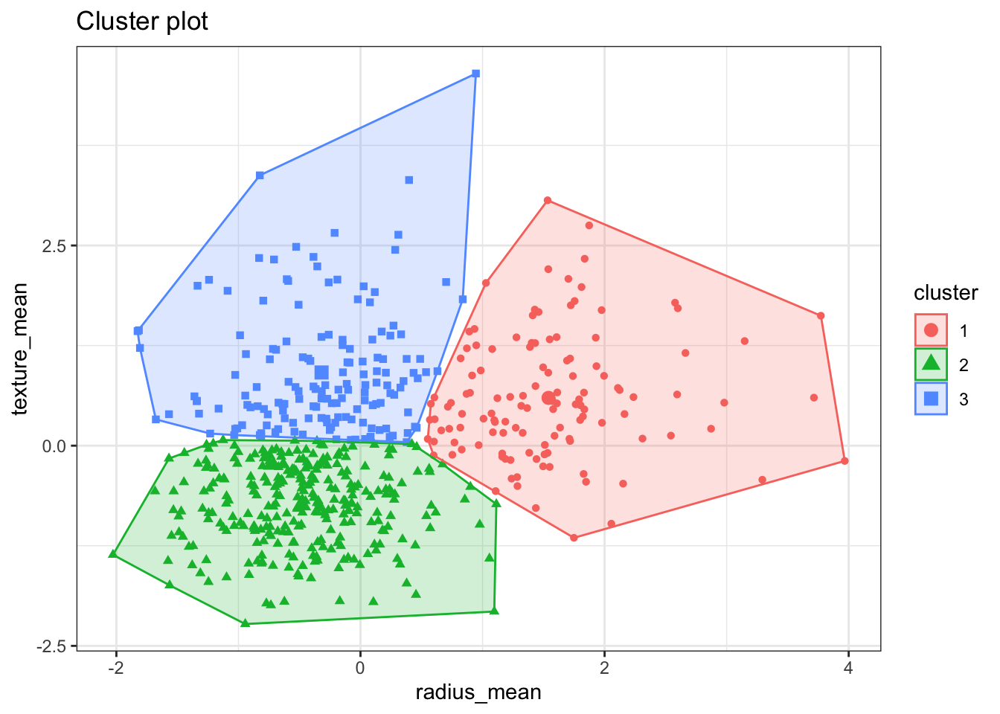
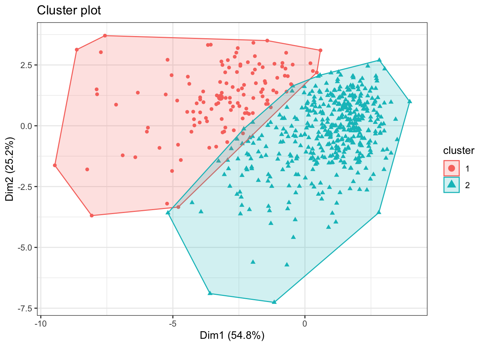
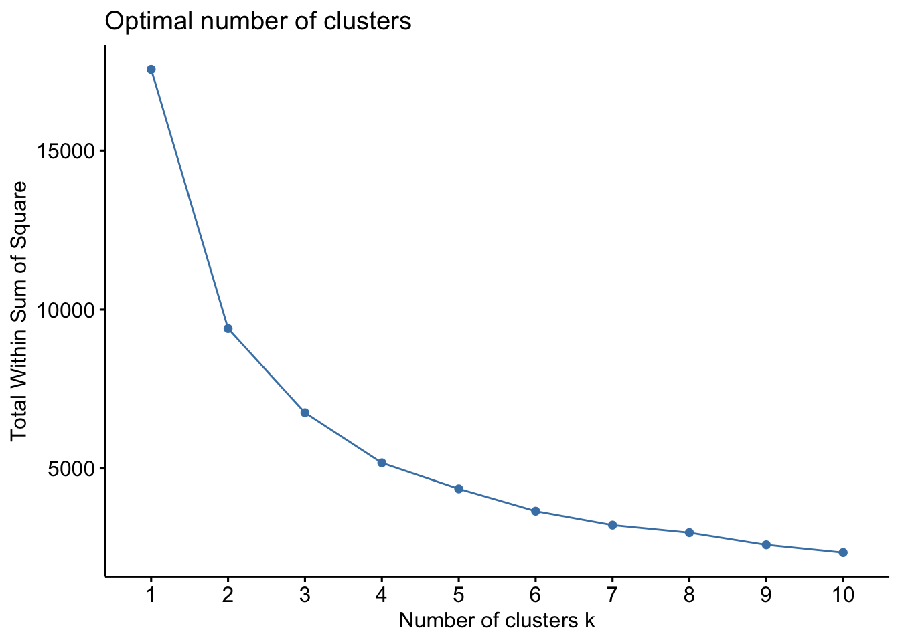
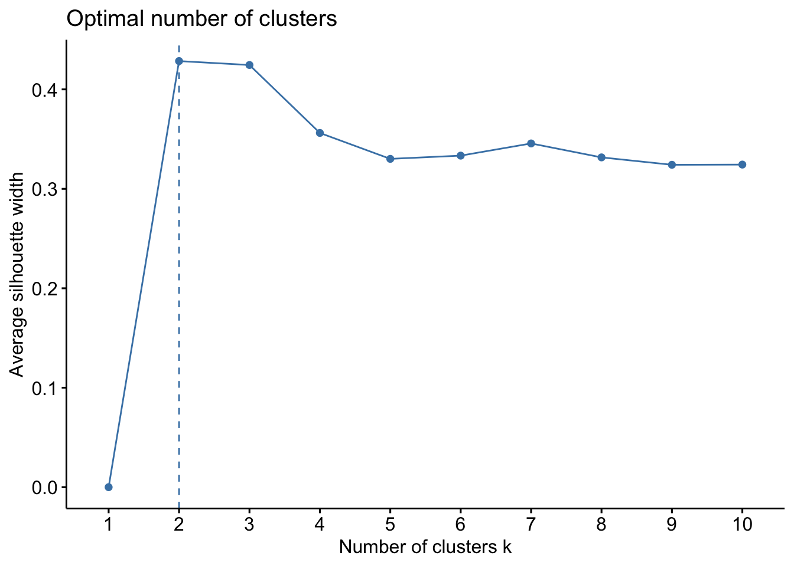
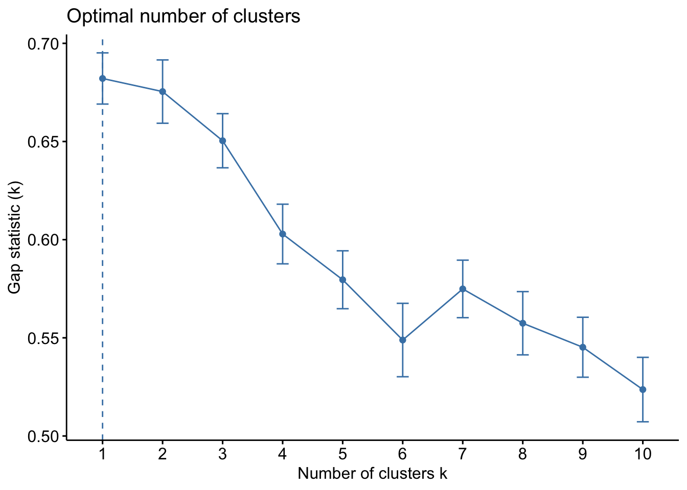

2 K-means clustering
2.1 Introduction
K-means clustering is a popular unsupervised learning method based on a simple and intuitive approach that clusters similar observations into groups.
We start by choosing the number of clusters \(K\) and the objective is to assign every observation to one, and just one, of the clusters. The clusters are chosen so that the within-cluster variation is minimised, i.e., the data points in each cluster should be close together.
The figure below shows an example of 3 clusters based on two variables.

The way the clusters are defined is based on an iterative process. Once we chose the number of clusters:
- We start by assigning each data point to one of the clusters, randomly.
- We then compute the centroid of each cluster.
- Next, we compute the distance (usually the Euclidean distance) of each data point to the centroids.
- The data points are re-assigned to the corresponding cluster of the closest centroid.
- The centroids are recomputed
- We repeat the process until convergence
One important question that immediately arises is how many clusters should we consider? Unfortunately, there is not a definitive answer. In the practice session we will show some graphical methods that can be used as an indication of the number of clusters suggested by the data, but as you will see, different methods can suggest different number of clusters.
2.2 Readings
Read the following chapters of An introduction to statistical learning:
- 12.4.1 K-Means Clustering Analysis
2.3 Practice session
Task 1 - Identify k clusters
Using the bdiag.csv, let’s use 2 of the variables that characterise the cell nuclei - radius_mean and texture_mean - to identify 3 data clusters
We will use the function kmeans() with the option centers=3 indicating
that we want 3 clusters.
#read the dataset
bdiag.data <- read.csv("https://www.dropbox.com/s/vp44yozebx5xgok/bdiag.csv?dl=1",
stringsAsFactors = TRUE)
#select a subset of the variables
bdiag.2vars <- bdiag.data[,c("radius_mean", "texture_mean")]
#let's compute the 3 clusters
km <- kmeans(bdiag.2vars, centers = 3)
km## K-means clustering with 3 clusters of sizes 123, 291, 155
##
## Cluster means:
## radius_mean texture_mean
## 1 19.55667 21.85732
## 2 12.43088 16.11027
## 3 13.00369 23.22110
##
## Clustering vector:
## [1] 2 1 1 3 1 2 1 3 3 3 3 2 1 3 3 3 3 1 1 2 2 2 2 1 1 2 3 1 3 2 1 2 1 1 2 1 3
## [38] 2 3 3 3 3 1 3 3 1 2 2 2 3 3 2 2 1 3 2 1 3 2 2 2 3 3 2 3 3 3 2 2 2 1 2 1 2
## [75] 2 1 2 2 1 2 3 2 1 1 2 1 3 1 3 2 3 3 2 2 3 1 2 3 2 3 3 2 3 2 2 2 2 2 1 3 2
## [112] 3 3 3 2 3 2 2 3 1 2 1 1 2 2 2 3 1 2 1 2 3 1 2 1 3 2 2 2 2 2 2 2 2 2 2 2 2
## [149] 2 2 3 3 2 2 2 2 1 1 2 2 3 1 1 3 1 3 2 1 1 2 2 3 2 2 2 2 2 1 3 2 1 1 3 2 3
## [186] 2 1 2 2 2 3 3 2 3 3 2 3 1 1 3 2 1 1 3 2 2 2 1 3 2 1 2 1 1 3 2 2 2 1 1 2 2
## [223] 2 3 2 2 2 2 3 3 1 3 3 1 2 3 1 1 3 3 2 2 2 3 1 3 2 2 3 2 1 2 1 2 1 2 1 2 3
## [260] 3 1 1 1 2 1 1 2 3 2 3 2 2 1 2 1 2 2 1 2 2 1 2 1 1 2 2 3 2 3 2 3 2 2 2 2 2
## [297] 2 2 2 3 1 3 1 2 2 3 2 2 2 2 2 2 2 2 2 2 2 1 2 2 2 1 2 1 2 2 2 2 1 1 2 2 3
## [334] 2 2 1 2 1 2 1 2 2 2 1 2 2 2 2 2 2 2 2 1 3 2 2 2 2 2 2 2 3 2 2 2 1 1 2 1 1
## [371] 3 2 1 1 2 2 3 3 2 2 2 2 3 2 2 3 2 2 2 1 2 2 3 1 2 2 2 2 2 2 1 2 2 2 2 2 2
## [408] 3 1 2 2 2 3 3 3 3 3 3 2 3 2 2 2 2 2 3 2 3 2 2 3 2 1 1 2 3 2 2 3 2 2 1 2 2
## [445] 1 3 1 2 2 1 3 1 3 2 2 3 3 3 3 3 3 1 3 2 2 3 3 2 1 2 2 3 2 3 2 2 3 2 2 1 2
## [482] 2 2 2 2 2 2 1 2 1 3 2 1 2 3 3 2 2 1 1 2 3 2 1 2 2 3 2 2 3 2 2 3 2 2 2 1 1
## [519] 2 2 2 1 3 2 2 2 2 2 2 2 2 3 2 1 2 1 3 3 3 3 2 3 3 3 3 3 2 2 2 3 3 3 3 3 3
## [556] 3 2 3 3 3 3 3 3 1 1 1 3 1 3
##
## Within cluster sum of squares by cluster:
## [1] 2001.931 2463.826 2288.434
## (between_SS / total_SS = 61.5 %)
##
## Available components:
##
## [1] "cluster" "centers" "totss" "withinss" "tot.withinss"
## [6] "betweenss" "size" "iter" "ifault"The component km$cluster has the final clusters assignment. We will use the
package factoextra that has some plot functions (based on ggplot) that are
useful.
The fviz_cluster() plots the results of the clusters in a scatter plot
formed by the two variables. If the clustering is based on more than 2
variables, this function will run a principal components analysis and plot
the first 2 principal components.

TRY IT YOURSELF:
- Get 2 clusters with k-mean clustering based on the variables age, weight, height, adipos, free, neck, chest, abdom, hip, thigh, knee, ankle, biceps, forearm and wrist .
See the solution code
#select a subset of the variables
bdiag.10vars <- bdiag.data[,c("radius_mean", "texture_mean",
"perimeter_mean", "area_mean",
"smoothness_mean", "compactness_mean",
"concavity_mean", "concave.points_mean",
"symmetry_mean", "fractal_dimension_mean")]
k2 <- kmeans(bdiag.10vars, centers = 2)
fviz_cluster(k2, data = bdiag.10vars, label=NA)+theme_bw()
Task 2 - Choosing the number of clusters
Lets consider the same example as in Task 1 with two variables.How many clusters should we consider?
There are some ad-hoc visual methods that may help you guide selecting the number of clusters.
The first method is called the Elbow method and consists in
- computing the k-means clustering for different values of \(k\), e.g, by varying \(k\) from 1 to 10 clusters
- then, for each k, calculate the total within-cluster sum of square (\(wss\))
- and finally, plot the curve of \(wss\) according to the number of clusters \(k\).
In the plot, the location of a bend (knee) suggests the appropriate number
of clusters. The function fviz_nbclust() implements this method

The plot above suggest 2 or 3 clusters.
Another method is the Average Silhouette Method. In this method we look at the quality of the clustering by measuring how well each data point lies within its cluster. If the average silhouette width is high, this suggests a good clustering. We can then compute the average silhouette width for different values of \(k\) and select the number of clusters with higher average silhouette width.
The same function as above also implements this method.

This method suggests 2 clusters.
The final method is the Gap Statistic Method. This method compares the total intracluster variation for different number of cluster \(k\) with their expected values under a data with no clustering (these data generated using Monte Carlo simulations). The higher the gap between the observed and expected, the better the clustering. More details about this method is available in R. Tibshirani, G. Walther, and T. Hastie (Standford University, 2001)

In this case, the method suggests 1 single cluster.
Depending on the method used, we could have selected between 1 to 3 clusters.
2.4 Exercises
Solve the following exercises:
- The dataset fat is available in the library(faraway).
The dataset contains several physical measurements.
Using the variables age, weight, height, adipos, free, neck, chest, abdom, hip, thigh, knee, ankle, biceps, forearm and wrist
Plot 3 clusters produce by k-mean in the scatter plot formed by the two principal components of the data?
Use different methods to investigate how many clusters are suggested by the data.